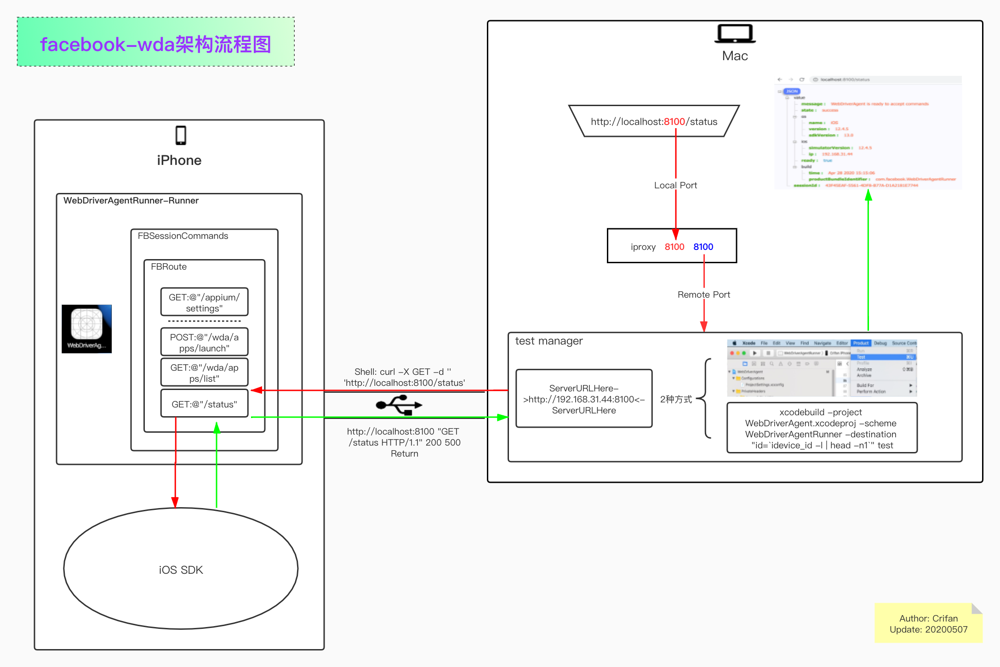
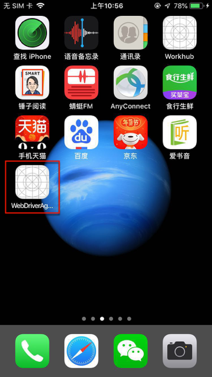
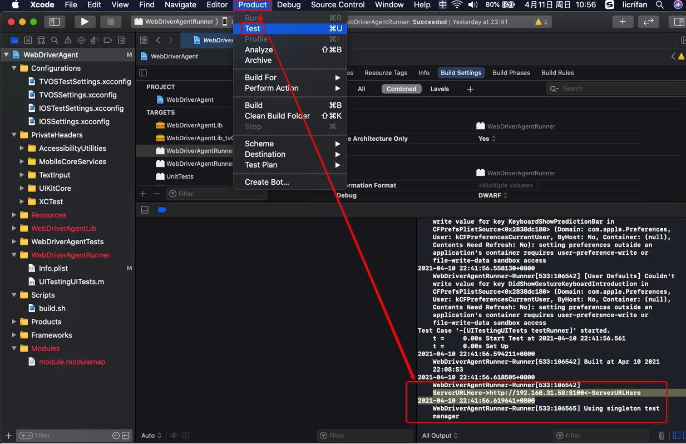
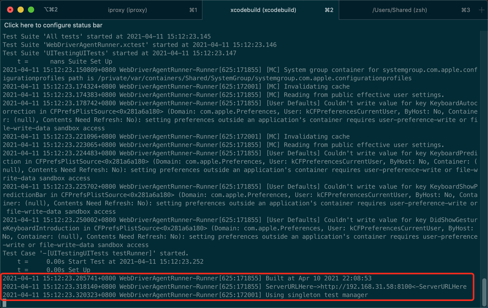
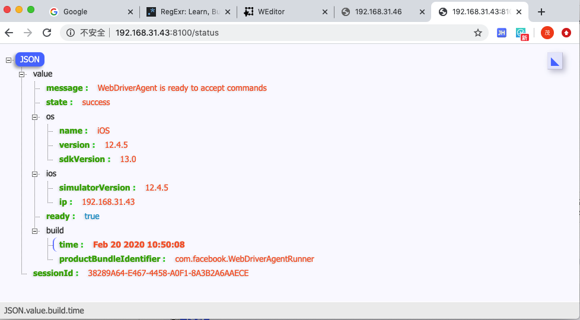
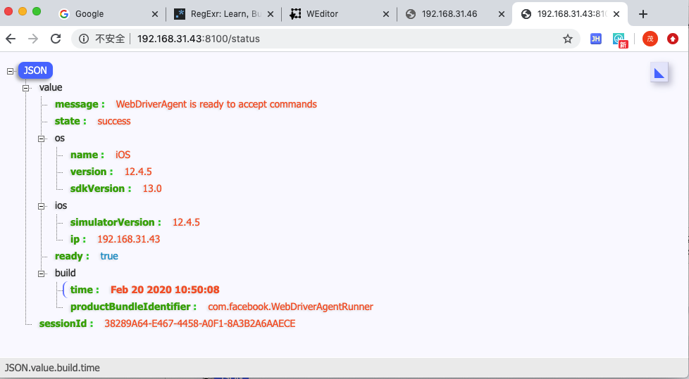
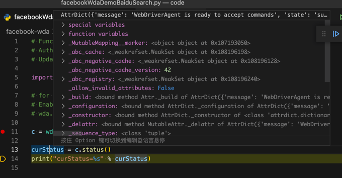

搭建环境
此处介绍如何用facebook-wda搭建iOS设备的自动化测试环境。
先介绍facebook-wda的架构流程图：
- 本地图片
- 
- 在线网页查看
开发环境概述
- 开发环境概述
client=客户端- 你要测试的
iOS设备，比如iPhone- 给
iPhone中安装WebDriverAgentRunner-Runner
- 给
- 你要测试的
server=服务端=test manager=WebDriverAgent的服务- 需要在
Mac中启动test manager
- 需要在
首次：初始化
先介绍初始化需要做的事情，其中：
- 初始化 = 第一次 = 首次 = 只需要做一次，以后无需重复做
想要能自动化操作iPhone等iOS设备，需要
（1）先确保Mac环境OK
把相关后续要用到的工具都安装好：
brew update
brew uninstall --ignore-dependencies libimobiledevice
brew uninstall --ignore-dependencies usbmuxd
brew install --HEAD usbmuxd
brew unlink usbmuxd
brew link usbmuxd
brew install --HEAD libimobiledevice
再去安装wda的库：
pip install facebook-wda
（2）再去给iPhone中安装相关内容
先确保iPhone已正常连接：
把iOS设备（iPhone等）插入Mac后，用
idevice_id -l
确保可以找到iPhone设备。
再去给iPhone中安装：
- 客户端 = APP =
WebDriverAgentRunner-Runner- 用于配合
Mac中的server端的test manager
- 用于配合
安装后的效果：

此处长按变待删除，才能看到app全名是：WebDriverAgentRunner-Runner：
给iPhone中安装WebDriverAgentRunner-Runner
核心思路，都是编译和安装app WebDriverAgentRunner-Runner到iPhone中：
- 确保Mac中已安装XCode
下载代码：
git clone https://github.com/appium/WebDriverAgent.git
切换目录：
cd WebDriverAgent
可以看到核心的入口文件，即Xcode项目文件：WebDriverAgent.xcodeproj
关于如何编译和安装，则有2种方式：
- 通过IDE
XCode去编译和安装Xcode->Product->Test- 注：准备工作包括
- 用
XCode打开WebDriverAgent.xcodeproj - 选择
Target的APP是：WebDriverAgentRunner - 去选择
Team，是自己（或别的可用的）开发者账号 - 会触发自动
Code Signing - 最后才是：
Product->Test
- 用
- 注：准备工作包括
- 在
终端运行xcodebuild命令去编译和安装Terminal中：运行xcodebuild的test
上述操作步骤，和后续的每次运行test manager的方式是一样的，所以细节放在后面介绍。
之后：每次调试之前
启动test manager服务
server=服务端=test manager=WebDriverAgent的服务- 需要在
Mac中启动test manager- 2种方式
- XCode
Xcode->Product->Test- 
- 终端
Terminal中：运行xcodebuild的test- 直接一步：
xcodebuild -project WebDriverAgent.xcodeproj -scheme WebDriverAgentRunner -destination "id=`idevice_id -l | head -n1`" test - 或分2步
- 先获取iOS设备的UDID：
CUR_UDID=$(idevice_id -l | head -n1) - 再运行
xcodebuild -project WebDriverAgent.xcodeproj -scheme WebDriverAgentRunner -destination "id=$CUR_UDID" test
- 先获取iOS设备的UDID：
- 注：
- 要在
WebDriverAgent的目录中运行上述命令 idevice_id -l作用是列出当前连接到Mac中的所有iOS的设备（的UDID）- 详见：idevice_id
head -n1作用是获取第一个（iOS设备的UDID）
- 要在
- 直接一步：
- XCode
- 2种方式
- 需要在
第一次：确保wda服务运行正常
- 先确保输出正常的信息，包含：
ServerURLHere和Using singleton test manager- 图
- 
- 文字
。。。 Test Case '-[UITestingUITests testRunner]' started. t = 0.01s Start Test at 2020-02-20 10:50:59.818 t = 0.01s Set Up 2020-02-20 10:50:59.968359+0800 WebDriverAgentRunner-Runner[460:142725] Built at Feb 20 2020 10:50:08 2020-02-20 10:51:00.119667+0800 WebDriverAgentRunner-Runner[460:142725] ServerURLHere->http://192.168.31.43:8100<-ServerURLHere 2020-02-20 10:51:00.123946+0800 WebDriverAgentRunner-Runner[460:142853] Using singleton test manager
- 图
即表示正常启动了test manager= WDA的server 了
如何确认test manager服务已正常运行
- 用浏览器等访问status端口
- （用浏览器）打开
test manager中显示的地址- http://192.168.31.43:8100
- 再加上
status后，就是 - http://192.168.31.43:8100/status
- 可以返回json状态信息
- 
{ "value": { "message": "WebDriverAgent is ready to accept commands", "state": "success", "os": { "name": "iOS", "version": "12.4.5", "sdkVersion": "13.0" }, "ios": { "simulatorVersion": "12.4.5", "ip": "192.168.31.43" }, "ready": true, "build": { "time": "Feb 20 2020 10:50:08", "productBundleIdentifier": "com.facebook.WebDriverAgentRunner" } }, "sessionId": "38289A64-E467-4458-A0F1-8A3B2A6AAECE" }
- 
- 如果已用（
iproxy 8100 8100实现了）端口转发，则可以直接用localhost
- （用浏览器）打开
用代码测试
import wda # for debug # Enable debug will see http Request and Response # wda.DEBUG = True c = wda.Client('http://localhost:8100') curStatus = c.status() print("curStatus=%s" % curStatus)- 确保能输出信息
- 比如
curStatus=AttrDict({'message': 'WebDriverAgent is ready to accept commands', 'state': 'success', 'os': {'testmanagerdVersion': 26, 'name': 'iOS', 'sdkVersion': '14.2', 'version': '12.3.1'}, 'ios': {'ip': '192.168.31.58'}, 'ready': True, 'build': {'time': 'Apr 10 2021 22:08:54', 'productBundleIdentifier': 'com.facebook.WebDriverAgentRunner'}, 'sessionId': None}) - 
- 比如
- 确保能输出信息

说明服务启动正常，环境搭建正常了